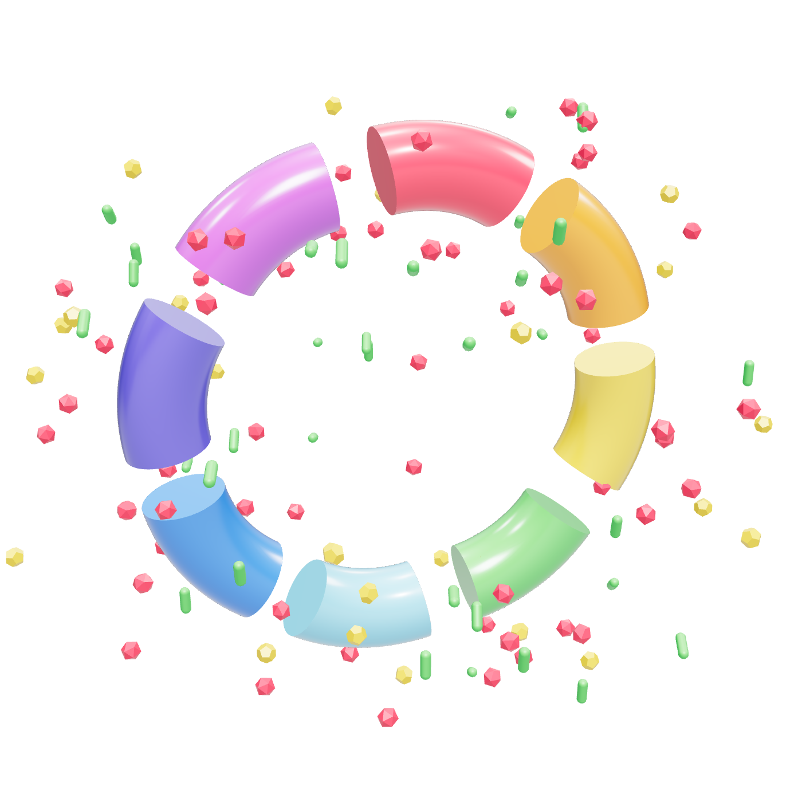

O que são ISTs.
IST é Infecção Sexualmente Transmissível. Quem causa são vírus, bactérias e protozoários. O caminho mais comum é o sexo oral, vaginal ou anal sem camisinha.

vírusbactériasprotozoários
- HIV, HPV, herpes, hepatites B e C vírus
- Sífilis, gonorreia, clamídia bactéria
- Tricomoníase protozoário
Boa parte não dá sintoma nenhum.
Quando aparece algo: corrimento diferente, ferida, bolha ou verruga na região genital, dor ou ardência ao fazer xixi. Vá ao posto. Pomada e antibiótico por conta própria só escondem o problema.